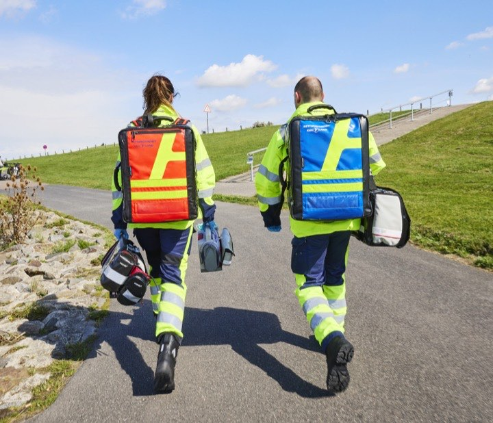
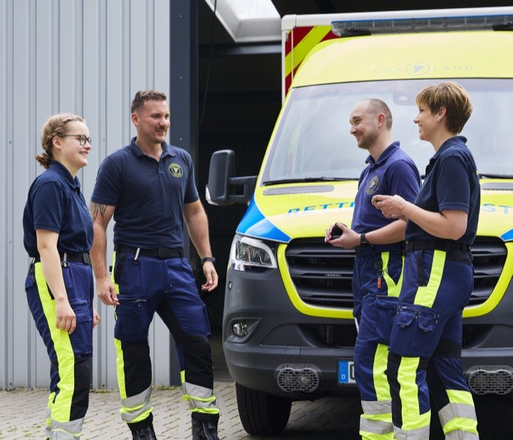
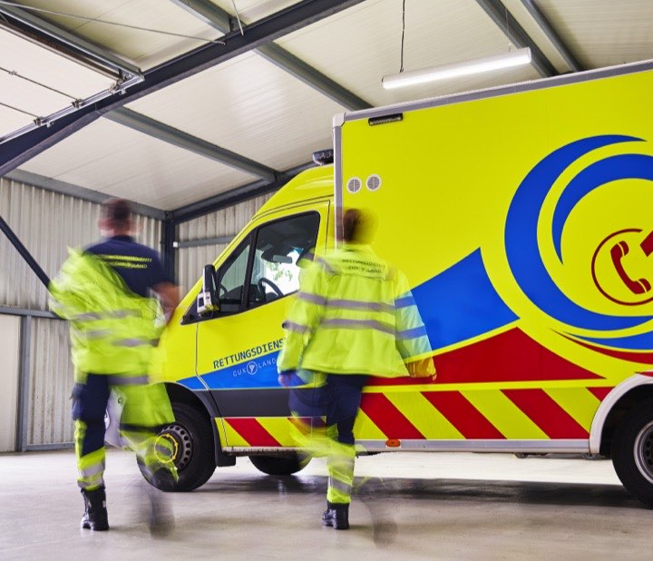
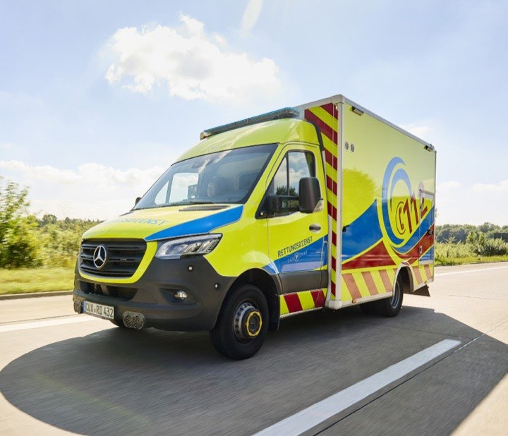
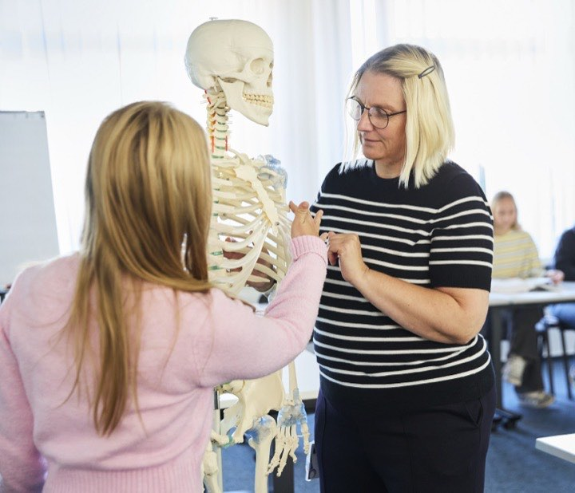
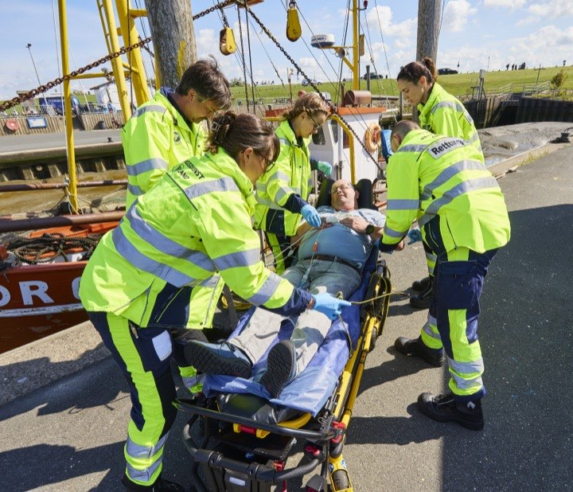

Unsere Vision
Wir wollen einen Rettungsdienst gestalten, auf den sich alle Menschen im Landkreis jederzeit verlassen können. Durch Professionalität, Innovation und verantwortungsvolles Handeln entwickeln wir unsere Arbeit kontinuierlich weiter, um auch den Herausforderungen der Zukunft gerecht zu werden. Unser Ziel ist eine starke Gemeinschaft, in der sich alle Menschen sicher und gut versorgt fühlen.
→ Wählen Sie einen unserer Werte.

Regionalität
Verwurzelt im Cuxland, verantwortlich für unsere Region
Unsere Heimat ist der Landkreis Cuxhaven. Als Rettungsdienst sind wir fest in unserer Region verwurzelt und Teil der öffentlichen Daseinsvorsorge. Wir handeln gemeinsam, respektvoll und zukunftsorientiert, in Verantwortung für die Menschen, unsere Gesellschaft und unsere Heimat.

Gemeinschaft
Respekt für jeden Menschen, Vielfalt als Stärke
Bei uns steht der Mensch im Mittelpunkt. Wir begegnen jedem Menschen mit dem gleichen Respekt, unabhängig von Herkunft, Religion, Alter, Geschlecht oder sozialem Hintergrund. Auch in unserem Team sehen wir Vielfalt als Stärke. Diskriminierung, Ausgrenzung oder Machtmissbrauch haben bei uns keinen Platz. Wertschätzung, Respekt und Vertrauen sind die Grundlage unserer Zusammenarbeit.

Professionalität
Kompetenz durch Standards und lebenslanges Lernen
Die bestmögliche Versorgung kranker und verletzter Menschen ist unser oberstes Ziel. Dafür handeln wir mit hoher Kompetenz, klaren Standards und professioneller Haltung, auch in herausfordernden Situationen. Grundlage unseres Handelns ist lebenslanges Lernen und die Orientierung an aktuellen wissenschaftlichen Erkenntnissen und Leitlinien.

Unser Anspruch
Zuverlässige Hilfe, jederzeit für die Menschen im Landkreis Cuxhaven
Wir sind für die Menschen im Landkreis Cuxhaven da, jederzeit, zuverlässig und mit hoher fachlicher Kompetenz. Unser Handeln ist geprägt von Verantwortung, Menschlichkeit und dem gemeinsamen Ziel, Leben zu retten und zu schützen.

Zukunftsorientierung
Innovativ handeln, nachhaltig Zukunft sichern
Wir gestalten den Rettungsdienst von morgen aktiv mit. Durch kontinuierliche Aus- und Fortbildung, Innovation und mutige Impulse entwickeln wir unsere Arbeit stetig weiter. Nachhaltigkeit und ein verantwortungsvoller Umgang mit Ressourcen sind für uns wichtige Grundlagen, um den Rettungsdienst langfristig zukunftsfähig zu gestalten.

Teamarbeit
Gemeinsam erfolgreich durch Zusammenarbeit aller Bereiche
Unser Erfolg basiert auf dem Zusammenspiel aller Bereiche, nicht nur im Rettungsdienst, sondern ebenso in der Verwaltung und im Bildungszentrum. Dabei leben wir einen modernen, respektvollen Führungsstil, der auf Wertschätzung, offene Kommunikation und Zusammenarbeit auf Augenhöhe basiert.